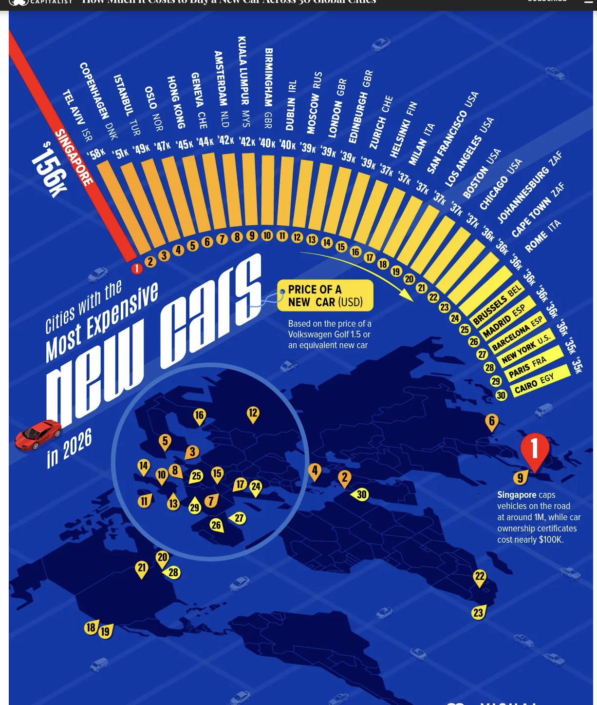

Visualization Critique and Redesign
How Much It Costs to Buy a New Car Across 30 Global Cities, by Dorothy Neufeld (text) and Christina Kostandi (design), Visual Capitalist, September 2026. View the original.
The infographic ranks 30 cities by the price of a Volkswagen Golf 1.5 or an equivalent new car in 2026, in US dollars, using a radial bar chart paired with a tilted map. The article's table covers 40 cities and also reports each city's price change from 2016 to 2026, which the graphic does not show. The underlying figures come from Deutsche Bank's Mapping the World's Prices 2026 report and Numbeo.

Price of a Volkswagen Golf 1.5 or an equivalent new car in 40 cities, 2026, in US dollars. Switch views to see which cities saw the steepest rise since 2016. Spike height on the maps and bar length in the ranking use the same measure. Hover any city to link them.
World
Europe, enlarged
26 of the 40 cities are here, so they get their own map. Spikes use the same scale as the world map.
Ranked by price in 2026
Dashed line: median of the other 39 cities.
Data preparation: prices and ten-year changes were transcribed from the article's table (40 cities). The region grouping and city coordinates were added by the author. 2016 prices are derived as price_2026 / (1 + change). Changes are measured in US dollars, so they include exchange-rate movements. Singapore's price includes its Certificate of Entitlement.